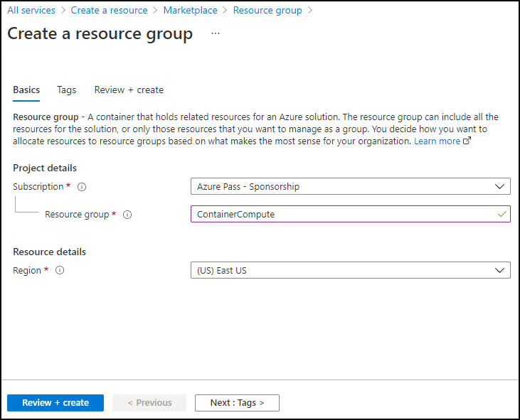

Lab 01: Create a VM by using the Azure Command-Line Interface (CLI)
Task 1: Open the Azure portal
In the open browser window, navigate to the Azure portal (https://portal.azure.com), and then sign in with the account you'll be using for this lab.
Note: If this is your first time signing in to the Azure portal, you'll be offered a tour of the portal. If you prefer to skip the tour, select Get Started to begin using the portal.
Task 2: Create a resource group
On the Azure portal's navigation pane, use the Search resources, services, and docs text box to search for Resource group, and then in the list of results, select Resource groups.
On the Resource groups blade, select Create.
On the Create a resource group blade, on the Basics tab, perform the following actions, and then select Review + create:
| Setting | Action | | -- | -- | | Subscription drop-down list | Retain the default value | | Resource group text box | Enter ContainerCompute | | Region drop-down list | Select (US) East US |
The following screenshot displays the configured settings on the Create a resource group blade.

On the Review + create tab, review the options that you selected during the previous steps.
Select Create to create the resource group by using your specified configuration.
Note: Wait for the creation task to complete before moving forward with this lab.
Task 3: Open Azure Cloud Shell
In the Azure portal, select the Cloud Shell icon
 to open a new PowerShell session. If Cloud Shell defaults to a PowerShell session, select PowerShell, and then in the drop-down menu, select Bash.
to open a new PowerShell session. If Cloud Shell defaults to a PowerShell session, select PowerShell, and then in the drop-down menu, select Bash.Note: The Cloud Shell icon is represented by a greater than sign (>) and underscore character (_).
Note: If this is the first time you're starting Cloud Shell, when prompted to select either Bash or PowerShell, select Bash. When you're presented with the You have no storage mounted message, select the subscription you're using in this lab, and then select Create storage.
At the Cloud Shell command prompt in the portal, run the following command to get the version of the Azure CLI tool:
az --version
Task 4: Use the Azure CLI commands
Run the following command to get a list of subgroups and commands at the root level of the CLI:
az --helpRun the following command to get a list of subgroups and commands for Azure Virtual Machines:
az vm --helpRun the following command to get a list of arguments and examples for the Create Virtual Machine command:
az vm create --helpRun the following command to create a new virtual machine with the following settings, be sure to record the password you are asked to create below you will need it later in the lab to access your virtual machine:
Resource group: ContainerCompute
Name: quickvm
Image: Debian
Admin-Username: student
Admin-Password: \
Note: Replace
<CreateYourPassword>in the command below with your own password.az vm create --resource-group ContainerCompute --name quickvm --image Debian --admin-username student --admin-password <CreateYourPassword>Note: Wait for the VM to be created. After the process completes, the command will return a JavaScript Object Notation (JSON) file containing details about the machine.
Run the following command to get a more detailed JSON file that contains various metadata about the newly created VM:
az vm show --resource-group ContainerCompute --name quickvmRun the following command to list all the IP addresses associated with the VM:
az vm list-ip-addresses --resource-group ContainerCompute --name quickvmRun the following command to filter the output to only return the first IP address value:
az vm list-ip-addresses --resource-group ContainerCompute --name quickvm --query '[].{ip:virtualMachine.network.publicIpAddresses[0].ipAddress}' --output tsvRun the following command to store the results of the previous command in a new Bash shell variable named ipAddress:
ipAddress=$(az vm list-ip-addresses --resource-group ContainerCompute --name quickvm --query '[].{ip:virtualMachine.network.publicIpAddresses[0].ipAddress}' --output tsv)Run the following command to render the value of the Bash shell variable ipAddress:
echo $ipAddressRun the following command to connect to the VM that you created previously in this lab, by using the Secure Shell (SSH) tool and the IP address stored in the Bash shell variable ipAddress:
ssh student@$ipAddressThe SSH tool informs you that the authenticity of the host can’t be established and then asks if you want to continue connecting. Enter yes, and then select Enter to continue connecting to the VM.
The SSH tool then asks for a password. Enter the password you created earlier, and then select Enter to authenticate with the VM.
After connecting to the VM by using SSH, run the following command to get metadata describing the Linux VM:
uname -aUse the exit command to end your SSH session:
exitClose the Cloud Shell pane in the portal.
Review
In this exercise, you used Cloud Shell to create a VM as part of an automated script.